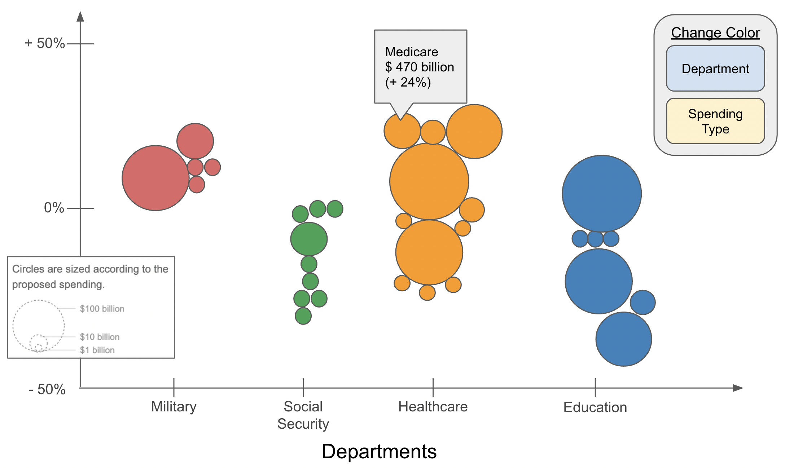
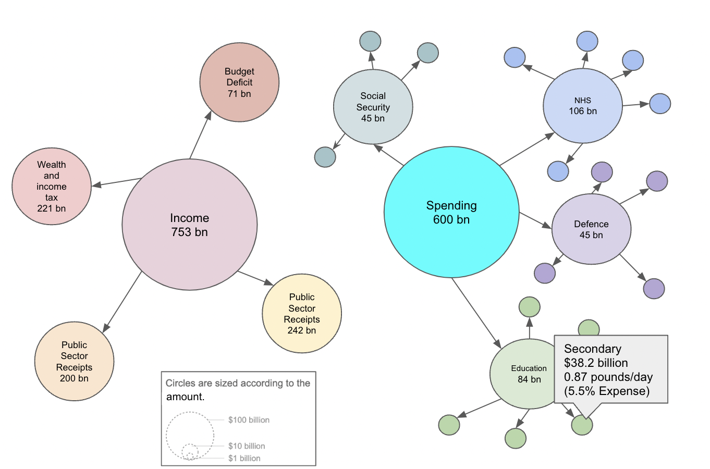

General populace who want a clear way to view the proposed spendings for departments in the US government.
Data / Task Abstraction
Data shows the forecasted spending amount, spending types, % change of spending, forecasted total spending of each department.
Idiom
Uses a circular packed bubble chart to represent the spending of each department
A color scale is used to represented the proposed budget % increase/decrease from the previous year
Critiques
Unable to tell the spending each circle represent at a glance without hovering over it
Some circles are too small and packed together which can make it too hard for a user to examine
By itself, colour scale is not an effective way to represent the % increase/decrease
Ordering does not represent any information other then the % increase/decrease
Data categorized according to departments is not ordered

Proposed Improvement (US Budget Proposal)
Improvements
Changed prev color channel representing % change to positional. Circles are positioned on y-axis according to % increase/decrease, allowing for better clarity of scale.
Data can be ordered by departments while staying aligned with the y-scale.
Color changed to match departments. Can be changed to match different spending types.
More space means it's easier to discover smaller circles.
General populace who want a clear way to view where taxes come from and how they are used by the UK government.
Data / Task Abstraction
Data shows the tax income and spending of the UK government in 2015. Income shows amount, and %. Spending shows amount, %, and average $ contributed by taxpayers per day.
Idiom
Uses a tree diagram - top tree shows income and bottom tree shows spendings.
Branches out the roots based on money received/spent, where larger sum of money have larger roots and smaller sum of money have smaller roots.
Critiques
Difficult to look for individual sections.
At a glance, shows total income obtained. There is no total outgoing budget.
Difficulty knowing if points along branches are part of the section total. Parent child relationship is not clear.
Too much data being presented at once

Proposed Improvement (UK Government Incomes & Outcomes)
Improvements
Changed to force diagram that users can intercact with.
Nodes can display information that allows users to identify the section.
Links and arrows can be used to highlight parent child relationship.
Less important data can be hidden behind tooltips, or toggled for mobile friendly set-up, to ensure visual clarity.
Node sizes can give users a high level overview of which areas amount to more.